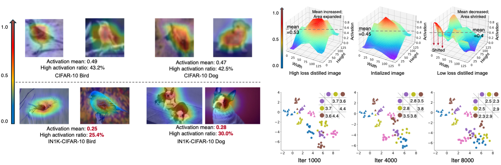
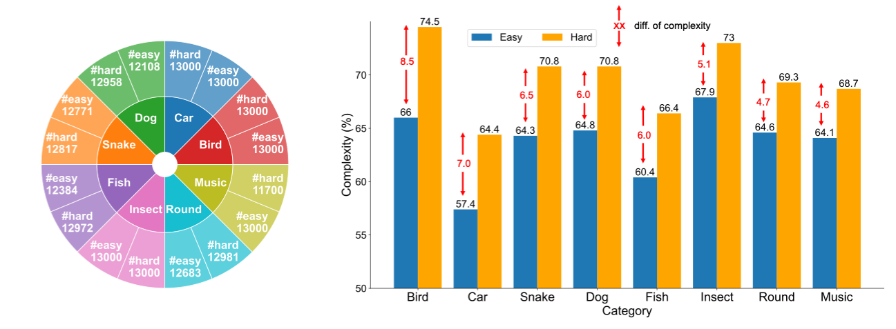
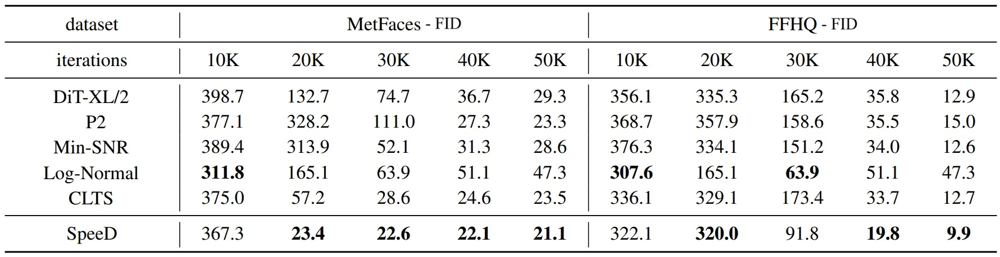

Emphasizing Discriminative Features
for Dataset Distillation in Complex Scenarios
|
1
|
2
|
3
|
*Equal contribution
Abstract
|
Dataset distillation has demonstrated strong performance on simple datasets like CIFAR, MNIST, and
TinyImageNet but struggles to achieve similar results in more complex scenarios. In this paper,
we propose EDF (emphasizes the discriminative features), a dataset
distillation method that enhances key discriminative regions in synthetic images using Grad-CAM
activation maps. Our approach is inspired by a key observation: in simple datasets, high-activation
areas typically occupy most of the image, whereas in complex scenarios, the size of these areas
is much smaller. Unlike previous methods that treat all pixels equally when synthesizing images,
EDF uses Grad-CAM activation maps to enhance high-activation areas. From a supervision perspective,
we downplay supervision signals that have lower losses, as they contain common patterns. Additionally,
to help the DD community better explore complex scenarios, we build the Complex Dataset Distillation
(Comp-DD) benchmark by meticulously selecting sixteen subsets, eight easy and eight hard, from ImageNet-1K.
In particular, EDF consistently outperforms SOTA results in complex scenarios, such as ImageNet-1K subsets.
Hopefully, more researchers will be inspired and encouraged to improve the practicality and efficacy of DD.
|
Motivation
|

Dataset distillation has demonstrated strong performance on simple datasets like CIFAR, MNIST, and
TinyImageNet but struggles to achieve similar results in more complex scenarios. In this paper,
we propose EDF (emphasizes the discriminative features), a dataset
distillation method that enhances key discriminative regions in synthetic images using Grad-CAM
activation maps. Our approach is inspired by a key observation: in simple datasets, high-activation
areas typically occupy most of the image, whereas in complex scenarios, the size of these areas
is much smaller. Unlike previous methods that treat all pixels equally when synthesizing images,
EDF uses Grad-CAM activation maps to enhance high-activation areas. From a supervision perspective,
we downplay supervision signals that have lower losses, as they contain common patterns. Additionally,
to help the DD community better explore complex scenarios, we build the Complex Dataset Distillation
(Comp-DD) benchmark by meticulously selecting sixteen subsets, eight easy and eight hard, from ImageNet-1K.
In particular, EDF consistently outperforms SOTA results in complex scenarios, such as ImageNet-1K subsets.
Hopefully, more researchers will be inspired and encouraged to improve the practicality and efficacy of DD.
|
Method

Our approach, Emphasize Discriminative Features (EDF), enhances discriminative features in synthetic images during distillation.
As shown in the figure, EDF first trains trajectories on real images \(T \) and synthetic images \(S \) and computes the trajectory matching loss.
Then, Common Pattern Dropout filters out low-loss supervision signals, retaining high-loss ones for backpropagation.
After obtaining gradients for the synthetic images, Discriminative Area Enhancement uses dynamically extracted Grad-CAM activation maps to
rescale pixel gradients, focusing updates on discriminative regions.
|
Comp-DD Benchmark
|

We introduce the Complex Dataset Distillation (Comp-DD) benchmark, which is constructed by selecting subsets from ImageNet-1K based on their complexity.
We define the complexity metrics of the \(i\)-th image is computed as \(\frac{\sum_{h}\sum_{w} \mathbb{1}[M^{i}_{h,w} \geq 0.5]}{H \cdot W}\). The complexity of each class is
then determined by averaging the complexity scores across all images within that class. To extract new subsets, we first manually identify representative categories in
ImageNet-1K with sufficient numbers of classes, then construct an easy and a hard subset with in each category. Each subset consists of ten classes.
This benchmark represents an early and pioneering effort to address dataset distillation in complex scenarios. Although there are numerous benchmarks for simpler tasks, there
is a notable absence of benchmarks designed specifically for complex scenarios. This gap presents a significant challenge to advancing research in this area and limits the
practical application of dataset distillation. To bridge this gap, we propose the first dataset distillation benchmark explicitly built around scenario complexity, aiming to
promote further exploration within the DD community.
|
Results
|

EDF achieves new SOTAs on various ImageNet-1K subsets, including ImageNette, ImageWoof, ImageMeow, ImageFruit, ImageYellow, and ImageSquawk.
|
|
Please feel free to contact us via email at Kai Wang or Zekai Li for any inquiries or assistance.
|